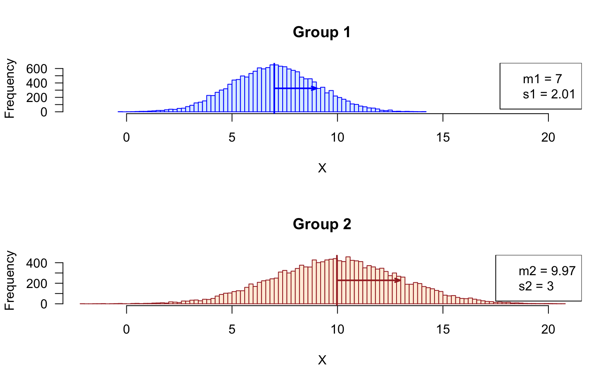
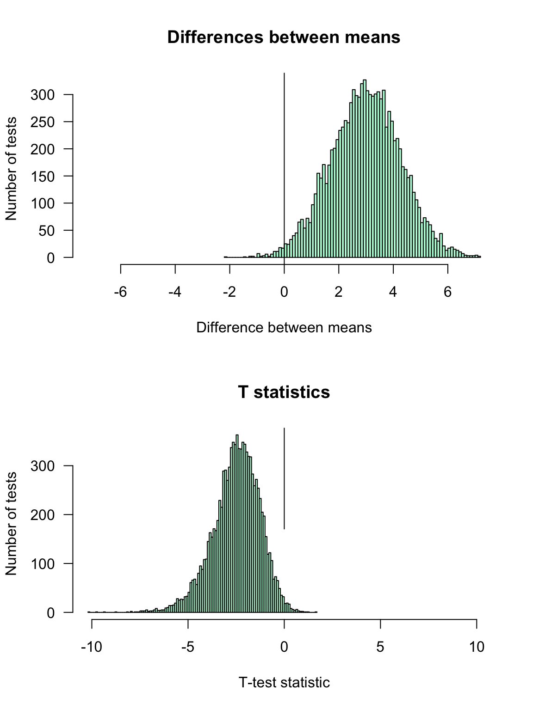
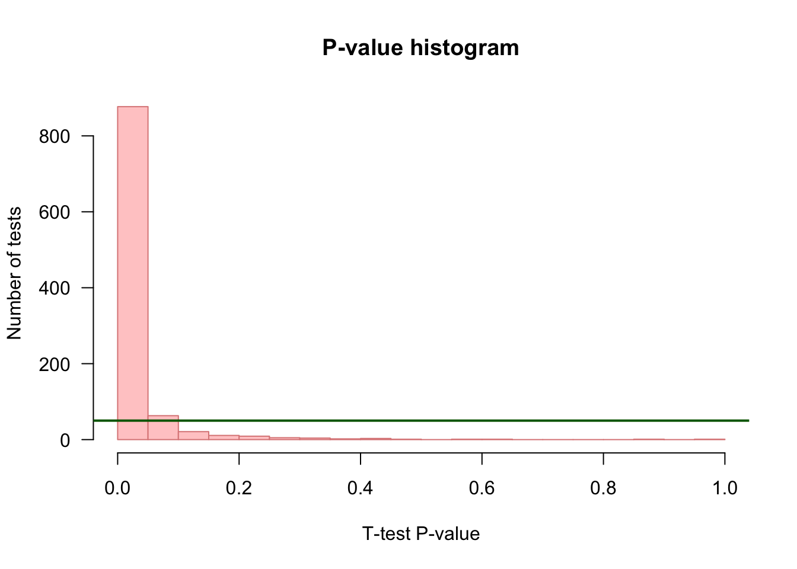
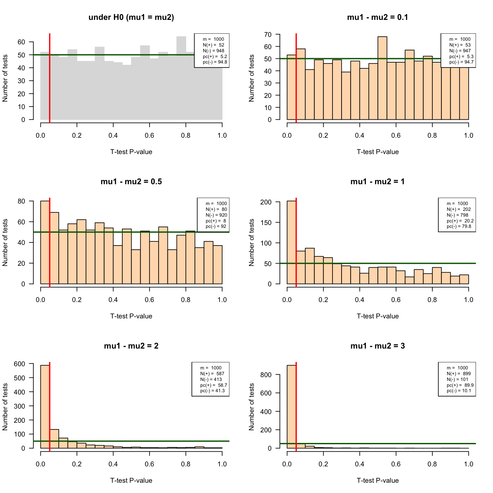

This tutorial aims at providing an empirical introduction to the application of mean comparison tests to omics data.
The goals include
using graphical representations in order to grasp the results of several thousand tests in a winkle of an eye:
The whole tutorial will rely on artificial data generated by drawing random numbers that follow a given distribution of probabilities (in this case, the normal distribution, but other choices could be made afterwards).
The tutorial will proceed progressively:
Generate a multivariate table (with individuals in columns and features in rows) and fill it with random data following a given distribution of probability.
Measure different descriptive parameters on the sampled data.
Use different graphical representations to visualise the data distribution.
Run a test of hypothesis on a given feature.
Run the same test of hypothesis on all the features.
Use different graphical representations to summarize the results of all the tests.
Apply different corrections for multiple testing (Bonferroni, Benjamini-Hochberg, Storey-Tibshirani q-value).
Compare the performances of the test depending on the chosen multiple testing correction.
Well, by “experimental” we mean here that we will perform in silico experiments.
Let us define the parameters of our analysis. We will generate data tables of artificial data following normal distributions, with either different means (tests under \(H_1\)) or equal means (tests under \(H_0\)).
We will do this for a number of features \(m_0=10,000\) (number of rows in the “\(H_0\)” data table), which could be considered as replicates to study the impact of sampling fluctuations.
In a second time (not seen here) we could refine the script by running a sampling with a different mean for each feature, in order to mimic the behaviour of omics datasets (where genes have different levels of expression, proteins and metabolite different concentrations).
| Parameter | Value | Description |
|---|---|---|
| \(n_1\) | \({2, 3, 4, 8, 16, 32, 64}\) | size of the sample from the first population. individual choice. Each participant will choose a given sample size |
| \(n_2\) | \(= n_1\) | size of the sample from the second population |
| \(\mu_1\) | 10 or 7 | mean of the first population. each participant will chose one value |
| \(\mu_2\) | 10 | mean of the second population |
| \(\sigma_1\) | 2 | Standard deviation of the first population |
| \(\sigma_2\) | 3 | Standard deviation of the second population |
| \(m_0\)$ | \(10,000\) | number of features under null hypothesis |
Each participant will choose a different sample size among the following values: \(n \in {2, 3, 4, 5, 8, 16, 64}\). Noteowrthy, many omics studies are led with a very small number of replicates (frequently 3), so that it will be relevant to evaluate thee impact of the statistical sample size (number of replicates) on the sensibility (proportion of cases declared positive under \(H_1\)).
We will measure the performances of a test by running \(r = 10,000\) times under \(H_0\), and \(r = 10,000\) times under \(H_1\).
\[FPR = \frac{FP}{m_0} = \frac{FP}{FP + TN} \]
\[FDR = \frac{FP}{\text{Positive}} = \frac{FP}{FP + TP} \]
\[Sn = \frac{TP}{m_1} = \frac{TP}{TP + FN} \] \[PPV = \frac{TP}{\text{Positive}} = \frac{TP}{TP + FP}\]
Choose a consistent coding style, consistent with a reference style guide (e.g. Google R Syle Guide). In particular:
myDataTable) rather than the dot separator (my.data.table)MyMeanCompaTest).Define your variables with explicit names (sigma, mu rather than a, b, c, …).
Comment your code
Ensure consistency between the code and the report \(\rightarrow\) inject the actual values of the R variables in the markdown.
Explicitly formulate the statistical hypotheses before running a test.
Discuss the assumptions underlying the test: are they all fulfilled? If not explain why (e.g. because we want to test the impact of this parameter, …) .
Write a block of code to define the parameters specified aboce.
Note that each participant will have a different value for the sample sizes (\(n_1, n_2\)).
#### Defining the parameters ####
## Sample sizes.
## This parameter should be defined individually for each participant
n1 <- 16 # sample size for the first group
n2 <- 16 # ssample size for second group
## First data table
m <- 1000 # Number of features
mu1 <- 7 # mean of the first population
mu2 <- 10 # mean of the second population
## Standard deviations
sigma1 <- 2 # standard deviation of the first population
sigma2 <- 3 # standard deviation of the second population
## Significance threshold.
## Note: will be applied successively on the different p-values
## (nominal, corrected) to evaluate the impact
alpha <- 0.05The table below lists the actual values for my parameters (your values for \(n_i\) will be different).
| Parameter | Value | Description |
|---|---|---|
| \(\mu_1\) | 7 | Mean of the first population |
| \(\mu_2\) | 10 | Mean of the second population |
| \(\sigma_1\) | 2 | Standard deviation of the first population |
| \(\sigma_2\) | 2 | Standard deviation of the second population |
| \(n_1\) | 16 | Sample size for the first group |
| \(n_2\) | 16 | Sample size for the second group |
Exercise:
Generate an data frame named group1 which with \(m_0\) rows (the number of features under \(H_0\), defined above) and \(n_1\) columns (sample size for the first population), filled with random numbers drawn from the first population.
Name the columns with labels indicating the group and sample number: g1s1, , g1s2 … with indices from 1 \(n_1\).
Name the rows to denote the feature numbers: ft1, ft2, … with indices from 1 to \(m_0\).
Check the dimensions of group1.
Print its first and last rows to check its content and the row and column names.
Generate a second data frame named group2 for the samples drawn from the second population with the appropriate size, and name the columns and rows consistently.
Useful functions
rnorm()matrix()data.frame()paste()paste0()colnames()rownames()dim()Trick:
matrix() enables us to define the number of columns and the number of rows,data.frames() does not enable this, but it can take as input a matrix, from which it will inherit the dimensionsSolution (click on the “code” button to check the solution).
#### Generate two tables (one per population) with the random samples ####
## Info: for didactiv purpose we will use a progressive approach to generate
## the data the first group, and a more compact formulation (in one command)
## for the second group.
## Dataset under H0, with a progressive approach
## Generate a vector of size m*n1 with all the random values
## for each feature and each infividual
normVector <- rnorm(n = m * n1, mean = mu1, sd = sigma1)
## Wrap the vector in an m x n1 matrix
normMatrix <- matrix(data = normVector,
nrow = m,
ncol = n1)
## Create a data frame with the content of this matrix
group1 <- data.frame(normMatrix)
## Set the column and row names
colnames(group1) <- paste(sep = "", "g1s", 1:n1)
rownames(group1) <- paste(sep = "", "ft", 1:m)
## Dataset under H1: use a more direct approach, compact the 3 steps in a single command
group2 <- data.frame(
matrix(data = rnorm(n = m * n2, mean = mu2, sd = sigma2),
nrow = m,
ncol = n2))
colnames(group2) <- paste(sep = "", "g2s", 1:n2)
rownames(group2) <- paste(sep = "", "ft", 1:m)Check the content of the data table from the first group.
[1] 1000 16| g1s1 | g1s2 | g1s3 | g1s4 | g1s5 | g1s6 | g1s7 | g1s8 | g1s9 | g1s10 | g1s11 | g1s12 | g1s13 | g1s14 | g1s15 | g1s16 | |
|---|---|---|---|---|---|---|---|---|---|---|---|---|---|---|---|---|
| ft1 | 5.954948 | 8.064822 | 5.015174 | 5.695020 | 9.292915 | 9.697368 | 8.262714 | 5.627334 | 7.767255 | 6.872944 | 5.168745 | 6.876734 | 6.118672 | 8.499913 | 3.700644 | 8.044234 |
| ft2 | 10.590760 | 5.995474 | 8.375732 | 7.423703 | 5.424012 | 7.895475 | 5.809159 | 7.312073 | 5.185339 | 6.963616 | 5.594542 | 6.037172 | 8.948034 | 9.232247 | 9.458520 | 3.645173 |
| ft3 | 9.007997 | 4.520587 | 6.935657 | 7.893533 | 10.103149 | 6.201195 | 10.742866 | 6.146190 | 6.134232 | 5.085967 | 11.232270 | 8.558184 | 6.839703 | 5.455468 | 7.459575 | 5.907917 |
| ft4 | 6.503102 | 7.237306 | 7.559155 | 11.242245 | 9.719426 | 5.251128 | 5.014788 | 3.732341 | 2.164460 | 10.803344 | 9.395955 | 10.363370 | 1.701106 | 7.370212 | 7.587863 | 12.192615 |
| ft5 | 3.860943 | 7.887661 | 7.093357 | 5.058828 | 6.299235 | 4.115458 | 5.453248 | 8.433514 | 7.450441 | 7.619313 | 9.147775 | 11.174007 | 6.632677 | 4.748560 | 5.915728 | 4.524085 |
| ft6 | 2.391701 | 9.554636 | 9.639942 | 5.567582 | 7.195886 | 5.439311 | 6.037617 | 4.421291 | 9.302362 | 8.224354 | 5.210717 | 5.036131 | 9.195664 | 2.591681 | 7.527028 | 8.520763 |
| g1s1 | g1s2 | g1s3 | g1s4 | g1s5 | g1s6 | g1s7 | g1s8 | g1s9 | g1s10 | g1s11 | g1s12 | g1s13 | g1s14 | g1s15 | g1s16 | |
|---|---|---|---|---|---|---|---|---|---|---|---|---|---|---|---|---|
| ft995 | 5.122742 | 8.130235 | 6.447421 | 6.013377 | 6.362956 | 10.660978 | 8.725328 | 6.215272 | 5.831621 | 5.203171 | 9.220684 | 6.427307 | 7.237971 | 9.151506 | 3.140748 | 5.125773 |
| ft996 | 8.110771 | 7.471845 | 5.738965 | 4.007088 | 7.077449 | 9.761707 | 7.654302 | 5.471797 | 8.571179 | 7.800186 | 4.394209 | 6.272262 | 3.424364 | 8.794532 | 7.682384 | 6.407243 |
| ft997 | 4.900644 | 10.218919 | 7.228398 | 5.842899 | 6.119631 | 6.373008 | 6.353401 | 8.583748 | 9.447333 | 10.663713 | 6.847237 | 4.320418 | 6.316274 | 6.761012 | 5.126590 | 6.710896 |
| ft998 | 6.903968 | 8.943440 | 5.709724 | 5.479777 | 9.133162 | 7.582338 | 4.700245 | 10.585765 | 5.459351 | 6.070957 | 6.039997 | 6.512816 | 8.704140 | 6.039639 | 9.282881 | 10.393885 |
| ft999 | 6.888579 | 8.762418 | 7.294184 | 8.890238 | 8.043809 | 6.893012 | 4.024788 | 6.804627 | 10.890716 | 5.872090 | 5.458334 | 7.495512 | 6.459533 | 5.636861 | 8.343844 | 7.849688 |
| ft1000 | 5.519602 | 5.356720 | 8.772015 | 6.197902 | 3.404726 | 8.398045 | 5.647723 | 3.688241 | 7.736613 | 8.636865 | 7.412763 | 8.184649 | 5.197287 | 4.047373 | 4.887833 | 7.537327 |
Check the content of the data table from the second group.
[1] 1000 16| g2s1 | g2s2 | g2s3 | g2s4 | g2s5 | g2s6 | g2s7 | g2s8 | g2s9 | g2s10 | g2s11 | g2s12 | g2s13 | g2s14 | g2s15 | g2s16 | |
|---|---|---|---|---|---|---|---|---|---|---|---|---|---|---|---|---|
| ft1 | 8.102100 | 10.826150 | 11.337819 | 11.068839 | 11.636898 | 12.336614 | 9.323162 | 5.547985 | 5.977651 | 12.957487 | 10.178054 | 10.517893 | 10.719635 | 14.808314 | 8.187635 | 10.010157 |
| ft2 | 11.293889 | 7.500944 | 8.661844 | 9.083720 | 10.954715 | 10.674328 | 8.196521 | 8.958220 | 6.797668 | 12.618614 | 12.911222 | 12.705689 | 9.788825 | 12.140047 | 7.841139 | 10.628433 |
| ft3 | 7.741492 | 8.013777 | 9.469043 | 8.301189 | 12.956706 | 12.491434 | 14.743089 | 12.224802 | 9.341403 | 8.284477 | 8.654808 | 5.871268 | 10.121001 | 8.152415 | 8.918535 | 8.124396 |
| ft4 | 7.463103 | 10.063589 | 5.197807 | 19.445732 | 7.410495 | 13.898586 | 13.777792 | 13.863352 | 14.517428 | 3.766121 | 5.661226 | 12.735920 | 7.274355 | 12.696023 | 6.989048 | 6.861331 |
| ft5 | 11.564785 | 11.132355 | 9.010403 | 17.635728 | 9.578838 | 8.456999 | 13.025781 | 8.859415 | 13.541330 | 14.543165 | 7.774720 | 11.665983 | 10.444967 | 11.765009 | 9.008836 | 1.992401 |
| ft6 | 4.726473 | 8.596126 | 10.311309 | 6.400143 | 14.841102 | 10.960761 | 11.670999 | 5.849472 | 11.862340 | 6.498369 | 4.355891 | 9.607266 | 16.709044 | 10.199725 | 9.854819 | 7.513134 |
| g2s1 | g2s2 | g2s3 | g2s4 | g2s5 | g2s6 | g2s7 | g2s8 | g2s9 | g2s10 | g2s11 | g2s12 | g2s13 | g2s14 | g2s15 | g2s16 | |
|---|---|---|---|---|---|---|---|---|---|---|---|---|---|---|---|---|
| ft995 | 9.302064 | 10.020851 | 13.453884 | 9.614922 | 8.701438 | 7.438961 | 8.283351 | 4.819784 | 8.869121 | 14.970223 | 15.289818 | 10.026576 | 9.285531 | 13.996188 | 14.611922 | 8.113658 |
| ft996 | 10.624651 | 9.391914 | 9.166735 | 8.722156 | 10.622673 | 5.016403 | 9.585008 | 10.445502 | 14.296009 | 8.361610 | 9.572280 | 5.470424 | 8.135544 | 9.609573 | 9.958919 | 9.682443 |
| ft997 | 10.907233 | 9.906619 | 12.124602 | 12.701646 | 8.349933 | 11.326041 | 11.905471 | 10.653299 | 10.760227 | 10.988665 | 5.904838 | 5.452255 | 14.275881 | 7.512990 | 10.459045 | 8.969807 |
| ft998 | 9.649949 | 8.776874 | 10.884521 | 7.018250 | 9.971263 | 6.952546 | 16.900391 | 6.729570 | 10.889355 | 9.268564 | 11.048920 | 7.131240 | 10.802698 | 9.855185 | 11.371389 | 4.600059 |
| ft999 | 15.903588 | 9.713344 | 8.866102 | 11.694944 | 5.745230 | 10.168428 | 9.230045 | 8.696039 | 9.203816 | 11.107557 | 12.216989 | 11.754640 | 12.631660 | 9.725818 | 6.271529 | 5.142572 |
| ft1000 | 14.242937 | 2.078517 | 11.406512 | 12.877328 | 14.205670 | 8.102003 | 4.476190 | 10.925212 | 10.566938 | 8.368179 | 9.307960 | 5.449197 | 13.722556 | 13.577927 | 11.382516 | 14.124552 |
Check the properties of the columns (individuals, e.g. biological samples) and rows (features, e.g. genes or proteins or metabolites) of the data tables.
Use the summary() funciton to quickly inspect the column-wise properties (statistics per individual).
Use apply(), mean() and sd() to generate a data frame that collects
g1s1 g1s2 g1s3 g1s4 g1s5 g1s6 g1s7 g1s8 g1s9 g1s10 g1s11 g1s12 g1s13 g1s14 g1s15 g1s16
Min. :-0.389 Min. : 1.070 Min. : 0.6445 Min. : 0.2101 Min. : 1.057 Min. : 0.3753 Min. : 0.4132 Min. : 0.653 Min. : 1.247 Min. :-0.3467 Min. : 0.1005 Min. : 0.6336 Min. : 1.209 Min. : 1.661 Min. : 0.760 Min. : 1.123
1st Qu.: 5.528 1st Qu.: 5.739 1st Qu.: 5.6960 1st Qu.: 5.6155 1st Qu.: 5.593 1st Qu.: 5.5194 1st Qu.: 5.7483 1st Qu.: 5.569 1st Qu.: 5.462 1st Qu.: 5.6231 1st Qu.: 5.6337 1st Qu.: 5.7501 1st Qu.: 5.773 1st Qu.: 5.582 1st Qu.: 5.605 1st Qu.: 5.646
Median : 7.047 Median : 7.158 Median : 6.9476 Median : 7.1170 Median : 6.910 Median : 6.8921 Median : 7.1068 Median : 6.906 Median : 6.883 Median : 7.0591 Median : 6.9144 Median : 7.0987 Median : 7.126 Median : 6.927 Median : 6.946 Median : 7.007
Mean : 6.950 Mean : 7.115 Mean : 6.9306 Mean : 7.0452 Mean : 6.953 Mean : 6.9608 Mean : 7.0384 Mean : 6.987 Mean : 6.875 Mean : 7.0527 Mean : 7.0029 Mean : 7.0730 Mean : 7.137 Mean : 6.970 Mean : 6.948 Mean : 7.014
3rd Qu.: 8.411 3rd Qu.: 8.489 3rd Qu.: 8.2637 3rd Qu.: 8.4336 3rd Qu.: 8.377 3rd Qu.: 8.4061 3rd Qu.: 8.3535 3rd Qu.: 8.376 3rd Qu.: 8.155 3rd Qu.: 8.4156 3rd Qu.: 8.2099 3rd Qu.: 8.3798 3rd Qu.: 8.496 3rd Qu.: 8.337 3rd Qu.: 8.264 3rd Qu.: 8.314
Max. :14.144 Max. :13.520 Max. :13.4264 Max. :13.0113 Max. :13.378 Max. :14.1898 Max. :12.9715 Max. :12.723 Max. :13.589 Max. :13.7694 Max. :13.3177 Max. :12.9299 Max. :13.884 Max. :13.298 Max. :14.061 Max. :13.817 g2s1 g2s2 g2s3 g2s4 g2s5 g2s6 g2s7 g2s8 g2s9 g2s10 g2s11 g2s12 g2s13 g2s14 g2s15 g2s16
Min. :-0.4655 Min. :-2.105 Min. :-0.7193 Min. : 0.5055 Min. :-0.2856 Min. : 0.2849 Min. : 0.571 Min. : 1.140 Min. :-0.5999 Min. :-1.109 Min. :-0.2133 Min. :-1.471 Min. : 1.286 Min. : 0.5077 Min. : 1.792 Min. :-0.07154
1st Qu.: 7.9567 1st Qu.: 8.019 1st Qu.: 8.0903 1st Qu.: 7.9384 1st Qu.: 7.9974 1st Qu.: 7.9762 1st Qu.: 7.851 1st Qu.: 7.940 1st Qu.: 7.8789 1st Qu.: 7.957 1st Qu.: 7.7661 1st Qu.: 7.852 1st Qu.: 8.226 1st Qu.: 8.0444 1st Qu.: 7.918 1st Qu.: 7.93260
Median : 9.9298 Median :10.218 Median : 9.9076 Median : 9.7861 Median :10.0203 Median :10.1720 Median : 9.894 Median : 9.924 Median : 9.7917 Median : 9.889 Median :10.0184 Median :10.013 Median :10.148 Median :10.0495 Median : 9.982 Median : 9.82308
Mean :10.0099 Mean :10.144 Mean :10.0293 Mean : 9.8760 Mean :10.0347 Mean :10.0951 Mean : 9.909 Mean : 9.921 Mean : 9.8933 Mean : 9.884 Mean : 9.8568 Mean : 9.949 Mean :10.030 Mean :10.0160 Mean :10.071 Mean : 9.85492
3rd Qu.:12.1719 3rd Qu.:12.069 3rd Qu.:12.0598 3rd Qu.:11.8268 3rd Qu.:11.9986 3rd Qu.:12.2265 3rd Qu.:11.901 3rd Qu.:12.067 3rd Qu.:11.9542 3rd Qu.:11.841 3rd Qu.:11.7945 3rd Qu.:12.013 3rd Qu.:11.918 3rd Qu.:11.9894 3rd Qu.:12.068 3rd Qu.:11.89477
Max. :20.1424 Max. :19.261 Max. :20.6705 Max. :19.4457 Max. :18.2495 Max. :20.2634 Max. :20.179 Max. :18.829 Max. :18.9203 Max. :19.787 Max. :18.4720 Max. :19.810 Max. :18.585 Max. :20.5006 Max. :19.987 Max. :20.21488 ## Columns-wise statistics
colStats <- data.frame(
m1 = apply(group1, MARGIN = 2, mean),
m2 = apply(group2, MARGIN = 2, mean),
s1 = apply(group1, MARGIN = 2, sd),
s2 = apply(group2, MARGIN = 2, sd)
)
## Row-wise statistics
rowStats <- data.frame(
m1 = apply(group1, MARGIN = 1, mean),
m2 = apply(group2, MARGIN = 1, mean),
s1 = apply(group1, MARGIN = 1, sd),
s2 = apply(group2, MARGIN = 1, sd)
)Tips: this can be done in a single operation.
In omics data analysis, we typically obtain
Two methods could be envisaged a priori:
cbind(), which simply binds the columns of two input tables. This can however be somewhat dangerous, because it assumes that these two tables have the same number of rows (features) and that these rows contain information about the same features in the same order. However, in some cases we dispose of data tables coming from different sources (or software tools), where the features (genes, proteins, metabolites) might have a partial overlap rather than an exact 1-to-1 correspondence, and, even when the feature sets are the same, they might be presented in different orderes.
A much safer approach is thus to use merge(), and to explicitly indicate one or several colummns on which the features from the two table will be unified
In our case, the two data tables only contain numeric data, and the identification will be done on the row names (which contain the feature identifiers ft1, ft2, … that we defined above). In some cases, we will have to merge data table containing different informations, including a column with identifiers (or maybe additional columns e.g. the genotype, conditions, …) and we will use internal columns of the table to unify their rows.
We will create such a structure for further analysis/
## Read the help of the merge() function
# ?merge
## Create a data frame with the merged values
dataTable <- merge(x = group1, y = group2, by = "row.names")
# dim(dataTable) # NOTE: the merged table contains n1 + n2 columns + one additional column Row.names
## Use the Row.names column as names for the merged table
row.names(dataTable) <- dataTable$Row.names
dataTable <- dataTable[, -1] ## Suppress the first column which contained the row names
# dim(dataTable)Tip: use mfrow() to display the histogram above each other, and set the limits of the abscissa (x axis) to the same value.
xlim <- range(append(group1, group2))
## Compute mean and sd for all the samples of group1 and group2, resp
m1 <- mean(unlist(group1))
m2 <- mean(unlist(group2))
s1 <- sd(unlist(group1))
s2 <- sd(unlist(group2))
par(mfrow = c(2,1))
## Plot histogram of Group1 values, and get the values in a variable named h1
h1 <- hist(x = unlist(group1), breaks = 100, col = "#DDEEFF", border = "blue",
main = "Group 1", xlab = "X", las = 1, xlim = xlim)
abline(v = m1, col = "blue", lwd = 2) ## mark the mean of all samples
arrows(x0 = m1, x1 = m1 + s1,
y0 = max(h1$counts)/2, y1 = max(h1$counts)/2,
length = 0.07, angle = 20, col = "blue", lwd = 2, code = 2)
legend("topright",
legend = c(paste0("m1 = ", round(digits = 2, m1)),
paste0("s1 = ", round(digits = 2, s1))))
## Plot histogram of Group2 values, and get the values in a variable named h2
h2 <- hist(x = unlist(group2), breaks = 100, col = "#FFEEDD", border = "brown",
main = "Group 2", xlab = "X", las = 1, xlim = xlim)
abline(v = mean(unlist(group2)), col = "brown", lwd = 2)
arrows(x0 = m2, x1 = m2 + s2,
y0 = max(h2$counts)/2, y1 = max(h2$counts)/2,
length = 0.07, angle = 20, col = "brown", lwd = 2, code = 2)
legend("topright",
legend = c(paste0("m2 = ", round(digits = 2, m2)),
paste0("s2 = ", round(digits = 2, s2))))
# xlim <- range(append(colStats$m1, colStats$m2))
## Compute the parameters (mean, sd) of the sampling distributions of the means
mm1 <- mean(rowStats$m1)
mm2 <- mean(rowStats$m2)
se1 <- sd(rowStats$m1)
se2 <- sd(rowStats$m2)
par(mfrow = c(2,1))
## Plot histogram of Group1 values, and get the values in a variable named h1
h1 <- hist(x = rowStats$m1, breaks = 100, col = "#AACCFF", border = "#AACCFF",
main = "Group 1", xlab = "X", las = 1, xlim = xlim)
abline(v = mm1, col = "blue", lwd = 2) ## mark the mean of all samples
arrows(x0 = mm1, x1 = mm1 + se1,
y0 = max(h1$counts)/2, y1 = max(h1$counts)/2,
length = 0.07, angle = 20, col = "blue", lwd = 2, code = 2)
legend("topright",
legend = c(paste0("mm1 = ", round(digits = 2, mm1)),
paste0("se1 = ", round(digits = 2, se1))))
## Plot histogram of Group2 values, and get the values in a variable named h2
h2 <- hist(x = rowStats$m2, breaks = 100, col = "#FFCCAA", border = "#FFCCAA",
main = "Group 2", xlab = "X", las = 1, xlim = xlim)
abline(v = mean(unlist(group2)), col = "brown", lwd = 2)
arrows(x0 = mm2, x1 = mm2 + se2,
y0 = max(h2$counts)/2, y1 = max(h2$counts)/2,
length = 0.07, angle = 20, col = "brown", lwd = 2, code = 2)
legend("topright",
legend = c(paste0("mm2 = ", round(digits = 2, mm2)),
paste0("se2 = ", round(digits = 2, se2))))Sampling distribution of the mean
Answer: the standard deviation of the sample means corresponds to the standard error.
Since we are interested by differences in either directions, we run a two-tailed test.
Hypotheses:
\[H_0: \mu_1 = \mu2\]
\[H_1: \mu_1 \ne \mu2\] Exercise: pick up a given feature (e.g. the \(267^{th}\)) and run a mean comparison test. Choose the parameters according to your experimental setting.
Tips:
t.test()i <- 267 ## Pick up a given feature, arbitrarily
## Select the values for this feature in the group 1 and group 2, resp.
## Tip: I use unlist() to convert a single-row data.frame into a vector
x1 <- unlist(group1[i, ])
x2 <- unlist(group2[i, ])
## Run Sudent t test on one pair of samples
t.result <- t.test(
x = x1, y = x2,
alternative = "two.sided", var.equal = FALSE)
## Print the result of the t test
print(t.result)
Welch Two Sample t-test
data: x1 and x2
t = -4.2095, df = 20.229, p-value = 0.0004219
alternative hypothesis: true difference in means is not equal to 0
95 percent confidence interval:
-5.655333 -1.909442
sample estimates:
mean of x mean of y
7.151477 10.933865 The difference between sample means was \(d = 3.78\).
The \(t\) test computed the \(t\) statistics, which standardizes this observed distance between sample means relative to the estimated variance of the population, and to the sample sizes. With the random numbers generated above, the value is \(t_{obs} = -4.2095\).
The corresponding p-value is computed as the sum of the area of the left and right tails of the Student distribution, with \(\nu = n_1 + n_2 - 2 = 20.2288126\) degrees of freedom. It indicates the probability of obtaining by chance – under the null hypothesis – a result at least as extreme as the one we observed.
In our case, we obtain \(p = P(T > |t_{obs}| = P(T > 4.2095) = 4.22\times 10^{-4}\). This is higher than our threshold \(alpha = 0.05\). We thus accept the null hypothesis.
In R, loops are quite inefficient, and it is generally recommended to directly run the computations on whole vectors (R has been designed to be efficient for this), or to use specific functions in order to apply a given function each row / column of a table, or to each element of a list.
For the sake of simplicity, we will first show how to implement a simple but inefficient code with a loop. In the advanced course (STATS2) will see how to optimize the speed with the apply() function.
## Define the statistics we want to collect
resultColumns <- c("i", # iteration number
"m1", # first sample mean
"m2", # second sample mean
"s1", # sd estimation for the first population
"s2", # sd estimation for the second population
"d", # difference between sample means
"t", # test statistics
"df", # degrees of freedom
"p.value" # nominal p-value
)
## Instantiate a result table to store the results
resultTable <- data.frame(matrix(nrow = m, ncol = length(resultColumns)))
colnames(resultTable) <- resultColumns # set the column names
# View(resultTable) ## Check the table: it contians NA values
## Iterate random number sampling followed by t-tests
## Use the funciton system.time() to measure the elapsed time
## This function is particular: you can also use it with curly brackets in order to enclose a block of several lines
time.iteration <- system.time(
for (i in 1:m) {
## Generate two vectors containing the values for sample 1 and sample 2, resp.
x1 <- unlist(group1[i, ]) ## sample 1 values
x2 <- unlist(group2[i, ]) ## sample 2 values
## Run the t test
t.result <- t.test(
x = x1, y = x2,
alternative = "two.sided", var.equal = FALSE)
# names(t.result)
## Collect the selected statistics in the result table
resultTable[i, "i"] <- i
resultTable[i, "t"] <- t.result$statistic
resultTable[i, "df"] <- t.result$parameter
resultTable[i, "p.value"] <- t.result$p.value
## Compute some additional statistics about the samples
resultTable[i, "m1"] <- mean(x1) ## Mean of sample 1
resultTable[i, "m2"] <- mean(x2) ## Mean of sample 2
resultTable[i, "s1"] <- sd(x1) ## Standard dev estimation for population 1
resultTable[i, "s2"] <- sd(x2) ## Standard dev estimation for population 1
resultTable[i, "d"] <- resultTable[i, "m1"] - resultTable[i, "m2"] ## Difference between sample means
}
#}
## View(resultTable)
)
print(time.iteration) user system elapsed
0.606 0.018 0.625 par(mfrow = c(2, 1))
#head(resultTable)
## Compute the maximal abslute value of difference to get a centered abcsissa.
## This enables to highlight whether the differences are positive or negative.
max.diff <- max(abs(resultTable$d))
## Draw an histogram of the observed differences
hist(resultTable$d,
breaks = 100,
col = "#DDFFEE",
border = "#44DD88",
las = 1,
xlim = c(-max.diff, max.diff), ## Make sure that the graph is centered on 0
main = "Differences between means",
xlab = "Difference between means",
ylab = "Number of tests")
abline(v = 0)
max.t <- max(abs(resultTable$t))
hist(resultTable$t,
breaks = 100,
col = "#DDFFEE",
border = "#44DD88",
las = 1,
xlim = c(-max.t, max.t), ## Make sure that the graph is centered on 0
main = "T statistics",
xlab = "T-test statistic",
ylab = "Number of tests")
abline(v = 0)
## Choose a color depending on whether we are under H0 (grey) or H1 (pink)
if (mu1 == mu2) {
histColor <- "#DDDDDD"
histBorder <- "#888888"
} else {
histColor <- "#FFCCCC"
histBorder <- "#DD8888"
}
## Draw an histogram of p-values with 20 bins
hist(resultTable$p.value,
breaks = 20,
col = histColor,
border = histBorder,
las = 1,
main = "P-value histogram",
xlab = "T-test P-value",
ylab = "Number of tests")
## Draw a horizontal line indicating the number of tests per bin that would be expected under null hypothesis
abline(h = m / 20, col = "darkgreen", lwd = 2)
Depending on the selected task in the assignments above, we will run different tests with different parameters and compare the results. The most rudimentary way to do this is top copy-paste the chunk of code above for each test and set of parameters required for the assigned tasks.
However, having several copies of an almost identical block of code is a very bad pracrice in programming, for several reasons
A better practice is to define a function that encapsulates the code, and enables to modify the parameters by passing them as **arguments*. Hereafter we define a function that
takes the parameters of the analysis as arguments
returns the results in a table with one row per iteration, and one column per resulting statistics (observed \(t\) score, p-value, difference between means, …);
#### Define a function that runs r iterations of the t-test ####
#' @title Repeat a T test with random numbers drawn from a normal distribution
#' @param mu1 mean of the first population
#' @param mu2 mean of the second population
#' @param sigma1 standard deviation of the first population
#' @param sigma2 standard deviation of the second population
#' @param n1 first sample size
#' @param n2 second sample size
#' @param m number of repetitions of the tests
#' @param ... additional parameters are passed to t.test(). This enables to set var.equal, alternative, ...
#' @return a table with one row per repetition of the test, and one column per statistics
IterateTtest <- function(mu1,
mu2,
sigma1,
sigma2,
n1,
n2,
m,
...) {
## Define the statistics we want to collect
resultColumns <- c("i", # iteration number
"m1", # first sample mean
"m2", # second sample mean
"s1", # sd estimation for the first population
"s2", # sd estimation for the second population
"d", # difference between sample means
"t", # test statistics
"df", # degrees of freedom
"p.value" # nominal p-value
)
## Instantiate a result table to store the results
resultTable <- data.frame(matrix(nrow = m, ncol = length(resultColumns)))
colnames(resultTable) <- resultColumns # set the column names
# View(resultTable) ## Check the table: it contians NA values
## Iterate random number sampling followed by t-tests
for (i in 1:m) {
## Generate two vectors containing the values for sample 1 and sample 2, resp.
x1 <- rnorm(n = n1, mean = mu1, sd = sigma1) ## sample 1 values
x2 <- rnorm(n = n2, mean = mu2, sd = sigma2) ## sample 2 values
## Run the t test
t.result <- t.test(
x = x1, y = x2,
alternative = "two.sided", var.equal = TRUE)
# names(t.result)
## Collect the selected statistics in the result table
resultTable[i, "i"] <- i
resultTable[i, "t"] <- t.result$statistic
resultTable[i, "df"] <- t.result$parameter
resultTable[i, "p.value"] <- t.result$p.value
## Compute some additional statistics about the samples
resultTable[i, "m1"] <- mean(x1) ## Mean of sample 1
resultTable[i, "m2"] <- mean(x2) ## Mean of sample 2
resultTable[i, "s1"] <- sd(x1) ## sd estimate for population 1
resultTable[i, "s2"] <- sd(x2) ## sd estimate for population 2
resultTable[i, "d"] <- resultTable[i, "m1"] - resultTable[i, "m2"] ## Difference between sample means
}
return(resultTable) ## This function returns the result table
}We can now use this function to iterate the \(t\) test with the parameters we want. Let us measure the running time
## Some tests under H1
system.time(
tTestTableH1 <- IterateTtest(mu1 = 7, mu2 = 10, sigma1 = 2, sigma2 = 3, n1 = 16, n2 = 16, m = 1000)
) user system elapsed
0.374 0.005 0.380 ## Some tests under H0
system.time(
tTestTableH0 <- IterateTtest(mu1 = 10, mu2 = 10, sigma1 = 2, sigma2 = 3, n1 = 16, n2 = 16, m = 1000)
) user system elapsed
0.377 0.001 0.379 This function can then be used several times, with different values of the parameters.
## What happens when the two means are equal (under the null hypothesis)
testH0 <- IterateTtest(mu1 = 10, mu2 = 10, sigma1 = sigma1, sigma2 = sigma2, n1 = n1, n2 = n2, m = m, var.equal = FALSE, alternative = "two.sided")
## Test increasing values of the difference between population means (delta)
delta0.1 <- IterateTtest(mu1 = mu1, mu2 = mu1 + 0.1, sigma1 = sigma1, sigma2 = sigma2, n1 = n1, n2 = n2, m = m, var.equal = FALSE, alternative = "two.sided")
delta0.5 <- IterateTtest(mu1 = mu1, mu2 = mu1 + 0.5, sigma1 = sigma1, sigma2 = sigma2, n1 = n1, n2 = n2, m = m, var.equal = FALSE, alternative = "two.sided")
delta1 <- IterateTtest(mu1 = mu1, mu2 = mu1 + 1, sigma1 = sigma1, sigma2 = sigma2, n1 = n1, n2 = n2, m = m, var.equal = FALSE, alternative = "two.sided")
delta2 <- IterateTtest(mu1 = mu1, mu2 = mu1 + 2, sigma1 = sigma1, sigma2 = sigma2, n1 = n1, n2 = n2, m = m, var.equal = FALSE, alternative = "two.sided")
delta3 <- IterateTtest(mu1 = mu1, mu2 = mu1 + 3, sigma1 = sigma1, sigma2 = sigma2, n1 = n1, n2 = n2, m = m, var.equal = FALSE, alternative = "two.sided")## Define a function that rdraws the p-value histogram
## based on the result table of t-test iterations
## as produced by the iterate.t.test() function.
pvalHistogram <- function(
resultTable, ## required input (no default value): the result table from iterate.t.test()
main = "P-value histogram", ## main title (with default value)
alpha = 0.05, ## Significance threshold
... ## Additional parameters, which will be passed to hist()
) {
## Plot the histogram
hist(resultTable$p.value,
breaks = seq(from = 0, to = 1, by = 0.05),
las = 1,
xlim = c(0,1),
main = main,
xlab = "T-test P-value",
ylab = "Number of tests",
...)
## Draw a horizontal line indicating the number of tests per bin that would be expected under null hypothesis
abline(h = m / 20, col = "darkgreen", lwd = 2)
abline(v = alpha, col = "red", lwd = 2)
## Compute the percent of positive and negative results``
nb.pos <- sum(resultTable$p.value < alpha)
nb.neg <- m - nb.pos
percent.pos <- 100 * nb.pos / m
percent.neg <- 100 * nb.neg / m
## Add a legend indicating the percent of iterations declaed positive and negative, resp.
legend("topright",
bty = "o",
bg = "white",
cex = 0.7,
legend = c(
paste("N(+) = ", nb.pos),
paste("N(-) =", nb.neg),
paste("pc(+) = ", round(digits = 2, percent.pos)),
paste("pc(-) =", round(digits = 2, percent.neg))
))
}par(mfrow = c(3, 2)) ## Prepare 2 x 2 panels figure
pvalHistogram(testH0, main = "under H0 (mu1 = mu2)", col = "#DDDDDD", border = "#DDDDDD")
pvalHistogram(delta0.1, main = "mu1 - mu2 = 0.1", col = "#FFDDBB")
pvalHistogram(delta0.5, main = "mu1 - mu2 = 0.5", col = "#FFDDBB")
pvalHistogram(delta1, main = "mu1 - mu2 = 1", col = "#FFDDBB")
pvalHistogram(delta2, main = "mu1 - mu2 = 2", col = "#FFDDBB")
pvalHistogram(delta3, main = "mu1 - mu2 = 3", col = "#FFDDBB")
We should now write a report of interpretation, which will address the following questions.
Based on the experiments under \(H_0\), compute the number of false positives and estimate the false positive rate (FPR). Compare these values with the E-value (expected number of false positives) for the 1000 tests, and with your \(alpha\) trheshold.
Based on the experiments under \(H_1\), estimate the sensitivity (Sn) of the test for the different mean differences tested here.
Interpret the histograms of P-values obtained with the different parameters ?
Draw a power curve (i.e. the sensitivity as a function of the actual difference between population means)
Discuss about the adequation between the test and the conditions of our simulations.
Do these observations correspond to what would be expected?
The same kind of questions will be asked for the 6 other questions above (impact of sample size, variance, non-normality, heteroscadicity, parametric vs non-parametric test).